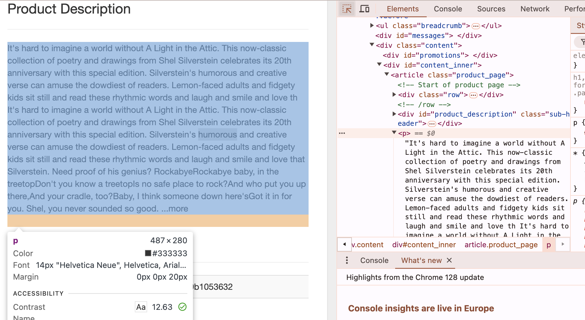
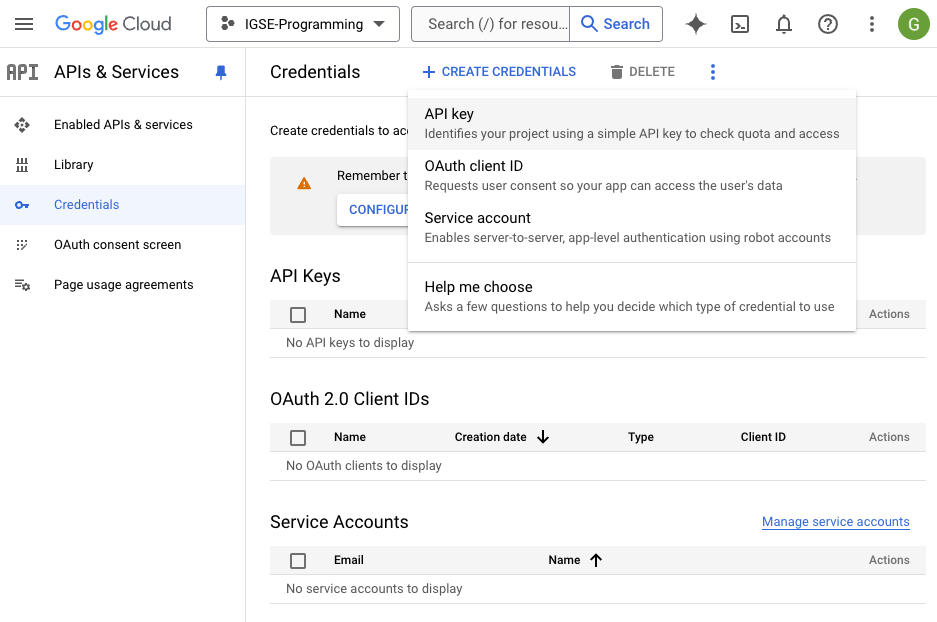
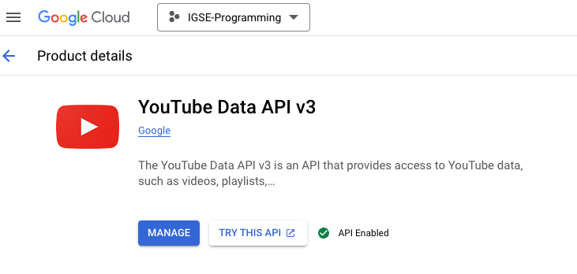
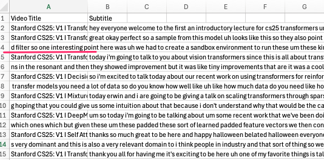
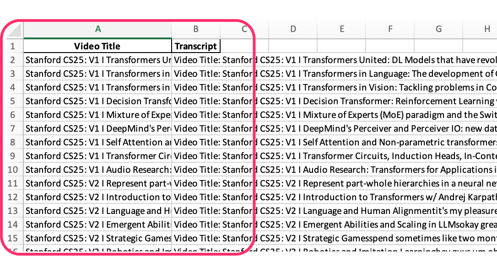

8 Building a Custom Corpus
Building a custom corpus involves several steps depending on the nature of the corpus and its intended use (e.g., linguistic analysis, natural language processing, or machine learning). Below is a step-by-step guide for constructing a custom text corpus:
8.1 Procedure
8.1.1 Define the Purpose
Before starting, clearly define the purpose of your corpus. For instance:
- Language Analysis: Are you studying phonetics, syntax, or semantics?
- Machine Learning/NLP: Do you need a training dataset for sentiment analysis, text classification, or language modeling?
- Domain-specific Corpus: Are you focusing on medical, legal, academic, or informal conversational language?
8.1.2 Decide on Data Sources
Determine where to source the data from:
- Web scraping: Use tools like BeautifulSoup or Scrapy to extract text from websites.
- Books, Papers, Articles: Digitize and preprocess text from publications.
- Social Media/Forums: Use APIs like Twitter, Reddit, or specific domain forums.
- Transcriptions: If you need spoken language, consider using speech-to-text services to create transcripts.
- Existing Corpora: You can augment your corpus with publicly available ones like the Brown Corpus, Gutenberg Project, or specialized databases.
8.1.3 Collect and Store the Data
- Web Scraping/Downloading: Use web crawlers, APIs, or manual downloads to gather the raw text data. Make sure to follow ethical guidelines, including copyright considerations.
- Database/Spreadsheet: Store collected texts in an organized format (e.g., CSV, JSON, or a relational database).
- Tagging Metadata: Include useful metadata (e.g., author, publication date, text genre, and source) to allow for targeted corpus queries.
8.1.4 Data Cleaning & Preprocessing
Raw text data needs to be cleaned and prepared for analysis:
- Tokenization: Break the text into sentences and words.
- Lowercasing: Convert all text to lowercase (if case sensitivity isn’t required).
- Remove Stopwords/Punctuation: You may want to exclude common words (like ‘and’, ‘the’) or punctuation, depending on the goal.
- Normalization: Convert numbers, dates, and other elements into consistent formats.
- Handling Special Characters: Replace or remove non-ASCII characters, HTML tags, or other artifacts from the data source.
- Lemmatization/Stemming: Reduce words to their base forms for consistency (e.g., running -> run).
8.1.5 Data Annotation (Optional)
- If you need a labeled dataset, annotate the text with additional information, such as:
- POS Tags: Parts of Speech tagging for grammatical structure.
- Named Entities: Tag entities like persons, locations, organizations.
- Sentiment or Categories: Manually label texts for sentiment, emotions, or specific classification tasks.
- You can use annotation tools like Brat, Prodigy, or Label Studio.
8.1.6 Corpus Formatting
After cleaning and processing the data, store it in a structured format:
- Plain Text: Simple text files (one document per file).
- XML/JSON: Structured formats with metadata tags and hierarchy.
- CSV/TSV: Useful if you need to store data with multiple fields (e.g., sentences, labels, tags).
- Specialized Formats: If the corpus is for NLP tasks, use formats like CoNLL or CSV files with token annotations.
8.1.7 Corpus Size & Diversity
- Determine the size of your corpus: Depending on the task, your corpus may need to be large (for language models) or small but highly focused (for linguistic studies).
- Ensure diversity: Balance the corpus with data from various genres, demographics, or domains, as needed.
8.1.8 Corpus Tools (Optional)
- If you need tools to manage or explore your corpus:
- AntConc: A free tool for analyzing text corpora (concordance, collocation, etc.).
- NLTK, spaCy: Python libraries for processing and analyzing corpora, which also provide tools for tokenization, tagging, and more.
8.1.10 Example: Steps for Building a Custom Sentiment Analysis Corpus
Define Purpose: Create a sentiment analysis corpus.
Collect Data: Scrape reviews from a website (e.g., Amazon reviews).
Preprocess: Remove HTML tags, stopwords, punctuation, and tokenize sentences.
Annotate: Manually label each review with positive, negative, or neutral sentiment.
Store: Save the corpus in a CSV format with columns: “Review Text”, “Sentiment”.
8.2 Web Scraping
Web scraping is the process of extracting data from websites. In Python, there are several popular libraries used for this purpose, including BeautifulSoup, requests, and Scrapy. Below is an overview of the steps involved in web scraping, followed by a Python code example using BeautifulSoup and requests.
8.2.1 Steps for Web Scraping
Install Required Libraries: You will need to install the following libraries:
requests: To send HTTP requests to a web page and get the HTML content.BeautifulSoup(from thebs4package): To parse the HTML and extract the data.- (Optional)
pandas: To store the extracted data in a structured format like a DataFrame.
Install them via pip:
pip install requests beautifulsoup4 pandasUnderstand the Website Structure:
- Open the website you want to scrape.
- Use your browser’s developer tools (F12 or right-click → Inspect) to inspect the HTML structure and identify the elements containing the data you want to scrape (e.g., headings, paragraphs, tables, etc.).
Write the Web Scraping Script:
- Use
requeststo fetch the HTML content of the page. - Parse the HTML using
BeautifulSoupand extract the required data. - Optionally, save the data in a CSV file or a DataFrame.
- Use
8.2.2 Example: Scraping Job Listings from a Webpage
To scrape data from all pages of the Books to Scrape website, including subsequent pages, you’ll need to set up a loop that continues until it reaches the last page. Each page’s URL follows the pattern https://books.toscrape.com/catalogue/page-X.html, where X is the page number.
The key is to keep requesting new pages and checking if a next page exists by inspecting the “Next” button. If it exists, you continue to the next page; otherwise, the loop stops.
Here’s the modified Python code that automatically handles pagination until the end of the list:
8.2.3 Python Code to Scrape All Pages with Pagination:
import requests
from bs4 import BeautifulSoup
import pandas as pd
# Create lists to store all extracted data
all_titles = []
all_prices = []
all_availability = []
all_links = []
all_descriptions = []
# Base URL for books to scrape
base_url = "https://books.toscrape.com/catalogue/"
page_url = "https://books.toscrape.com/catalogue/page-1.html"
# Loop through each page until there is no next page
while True:
# Send a GET request to the current page
response = requests.get(page_url, timeout=10)
# Check if the request was successful
if response.status_code == 200:
soup = BeautifulSoup(response.content, 'html.parser')
# Find all book entries on the page
books = soup.find_all('article', class_='product_pod')
for book in books:
title = book.h3.a['title']
all_titles.append(title)
price = book.find('p', class_='price_color').text.strip()
all_prices.append(price)
availability = book.find('p', class_='instock availability').text.strip()
all_availability.append(availability)
relative_link = book.h3.a['href']
full_link = base_url + relative_link.replace('../../', '')
all_links.append(full_link)
# Now scrape the product description from the book's page
try:
book_response = requests.get(full_link, timeout=10)
if book_response.status_code == 200:
book_soup = BeautifulSoup(book_response.content, 'html.parser')
# Scrape the product description
description_element = book_soup.select_one('#content_inner > article > p')
if description_element:
description = description_element.text.strip()
else:
description = "No description available."
else:
description = "Failed to retrieve description."
except Exception as e:
description = f"Error: {str(e)}"
all_descriptions.append(description)
# Check if there's a next page by looking for the "next" button
next_button = soup.select_one('li.next > a')
if next_button:
next_page_relative_url = next_button['href']
page_url = base_url + next_page_relative_url # Construct the URL for the next page
else:
break # No more pages, exit the loop
else:
print(f"Failed to retrieve page. Status code: {response.status_code}")
break
# Save all the data to a DataFrame and CSV file
books_df = pd.DataFrame({
'Title': all_titles,
'Price': all_prices,
'Availability': all_availability,
'Link': all_links,
'Product Description': all_descriptions
})
books_df.to_csv('books_scraped_with_descriptions_all_pages.csv', index=False)
# Print the extracted data
print(books_df)8.2.4 Explanation:
- Pagination Handling:
- The loop starts from the first page (
page-1.html) and checks for the presence of a “Next” button (li.next > a) at the bottom of the page. - If the “Next” button exists, the script extracts the URL for the next page and continues the loop. If not, the loop ends.
- The loop starts from the first page (
- Extracting Book Information:
- For each book on a page, the script extracts the title, price, availability, and the link to the book’s detail page.
- It then sends a separate request for each book’s detail page and scrapes the product description from the section (e.g.,
#content_inner > article > p).

Fig. 1. How to copy “selector” address (F12 key + Selector)
- Exiting the Loop:
- The loop breaks when there is no “Next” button on the page, meaning it has reached the last page of the pagination.
- Saving Data:
- The extracted data (titles, prices, availability, links, and product descriptions) is stored in a Pandas DataFrame and saved as a CSV file (
books_scraped_with_descriptions_all_pages.csv).
- The extracted data (titles, prices, availability, links, and product descriptions) is stored in a Pandas DataFrame and saved as a CSV file (
8.2.5 Expected Output:
The script will scrape all available pages of books and store the data in a CSV file with columns for the book title, price, availability, link, and product description.
8.3 YouTube Subtitle Extraction
You can extract subtitles (also called closed captions) from YouTube videos using the YouTube Data API or by directly downloading the subtitles if they are available. Here’s a guide on how to do both using Python.
8.3.1 Method 1: Using YouTube Transcript API (Simpler Approach)
A Python package called youtube-transcript-api provides an easy way to extract subtitles from YouTube videos without needing an API key.
8.3.1.1 Step 1: Install youtube-transcript-api
You can install this package using pip:
pip install youtube-transcript-api8.3.1.2 Step 2: Code Example to Extract Subtitles
from youtube_transcript_api import YouTubeTranscriptApi
import csv
# Replace with your YouTube video ID
video_id = 'YOUR_VIDEO_ID'
# Fetch the transcript
try:
transcript = YouTubeTranscriptApi.get_transcript(video_id)
# Prepare to save the transcript to a .txt file
with open('transcript.txt', 'w', encoding='utf-8') as txt_file:
for entry in transcript:
start_time = entry['start']
duration = entry['duration']
text = entry['text']
# Writing to txt file
txt_file.write(f"Start: {start_time} seconds, Duration: {duration} seconds\nText: {text}\n\n")
# Prepare to save the transcript to a .csv file
with open('transcript.csv', 'w', newline='', encoding='utf-8') as csv_file:
writer = csv.writer(csv_file)
# Writing the header
writer.writerow(['Start Time (seconds)', 'Duration (seconds)', 'Text'])
# Writing each transcript entry
for entry in transcript:
writer.writerow([entry['start'], entry['duration'], entry['text']])
print("Transcript saved as 'transcript.txt' and 'transcript.csv'")
except Exception as e:
print(f"Error: {e}")8.3.1.3 Example:
If the video URL is https://www.youtube.com/watch?v=abcd1234, then the video_id would be abcd1234.
This will return a list of subtitles with their start times and duration for the video. The subtitles must be available for the video (either auto-generated or uploaded by the video creator).
8.3.1.4 Explanation:
- Text File (
transcript.txt):- We open a text file (
transcript.txt) in write mode. - For each subtitle entry, we format and write the start time, duration, and the text of the subtitle into the file.
- We open a text file (
- CSV File (
transcript.csv):- We open a CSV file in write mode.
- We write the header with three columns:
Start Time,Duration, andText. - We then write each subtitle entry (start time, duration, and text) as a row in the CSV file.
8.3.1.5 Output:
transcript.txt: Contains a formatted transcript with start times, durations, and text for each subtitle entry.transcript.csv: Contains the transcript data organized in a table with three columns:Start Time,Duration, andText.
8.3.2 Method 2: Using YouTube Data API v3
The YouTube Data API v3 does not directly provide subtitles but can help you identify videos that have captions, and from there, you can manually fetch the captions if they are available.
8.3.2.1 Step 1: Set Up YouTube Data API
- Go to the Google Developers Console.
- Create a new project and enable the YouTube Data API v3.
- Generate an API key from the credentials tab.


8.3.2.2 Step 2: Install the Required Libraries
pip install google-api-python-client8.3.2.3 Step 3: Code Example to Check for Subtitles Availability
If you only want to save the video title and the entire subtitle (combined) as a single row in the CSV file, we can modify the script to:
- Fetch the title of the video using the YouTube Data API.
- Fetch the transcript (subtitles) using the
youtube-transcript-apiand combine the entire transcript text into one row. - Save the video title and entire subtitle as a single row in the CSV file.
Here’s the modified code:
8.3.2.4 Modified Code:
from googleapiclient.discovery import build
from youtube_transcript_api import YouTubeTranscriptApi
import csv
# Replace with your API key
api_key = 'YOUR_API_KEY'
youtube = build('youtube', 'v3', developerKey=api_key)
# Replace with the video ID you want to check
video_id = 'YOUR_VIDEO_ID'
# Fetch video details
response = youtube.videos().list(
part='snippet,contentDetails',
id=video_id
).execute()
# Check if video exists and fetch the title
if 'items' in response and response['items']:
video_title = response['items'][0]['snippet']['title'] # Get the video title
print(f"Video Title: {video_title}")
# Check if captions are available and fetch the transcript
if 'contentDetails' in response['items'][0] and 'caption' in response['items'][0]['contentDetails']:
if response['items'][0]['contentDetails']['caption'] == 'true':
print(f"Captions are available for video ID: {video_id}")
# Fetch transcript using youtube-transcript-api
try:
transcript = YouTubeTranscriptApi.get_transcript(video_id)
# Combine all the subtitles into a single string
combined_subtitle = " ".join([entry['text'] for entry in transcript])
# Save the video title and combined subtitles to a .csv file
with open('transcript.csv', 'w', newline='', encoding='utf-8') as csv_file:
writer = csv.writer(csv_file)
writer.writerow(['Video Title', 'Subtitle']) # Header row
writer.writerow([video_title, combined_subtitle]) # Data row
print("Transcript saved as 'transcript.csv'")
except Exception as e:
print(f"Error fetching transcript: {e}")
else:
print(f"No captions available for video ID: {video_id}")
else:
print(f"No video found for video ID: {video_id}")8.3.2.5 Explanation of Changes:
- Video Title:
- We extract the video title using the YouTube Data API from
response['items'][0]['snippet']['title'].
- We extract the video title using the YouTube Data API from
- Combining Subtitles:
- Instead of saving the start time, duration, and individual subtitle entries, the script now combines all the subtitle texts into a single string using
" ".join([entry['text'] for entry in transcript]).
- Instead of saving the start time, duration, and individual subtitle entries, the script now combines all the subtitle texts into a single string using
- Saving to CSV:
- The script saves only two fields in the CSV: the video title and the combined subtitles (as one row).
8.3.2.6 Output:
transcript.csv: Contains the video title and the entire subtitle in one row.
8.3.2.7 Notes:
- This code assumes that the subtitles are available for the video. If not, it will print an appropriate message.
- The entire subtitle text is combined into a single string and saved in the CSV file.
8.3.3 Method 3: Retrieve the subtitles of multiple videos from a YouTube playlist
To retrieve the subtitles of multiple videos from a YouTube playlist and save the results in a CSV file with each row containing the video title and the subtitles, we can follow these steps:
8.3.3.1 Steps:
- Use the YouTube Data API to fetch all the video IDs from the playlist.
- For each video, fetch the video title and subtitles using
youtube-transcript-api. - Save the video title and combined subtitles for each video in a CSV file.
8.3.3.2 Notes:
- Playlist ID: You need to replace
'YOUR_PLAYLIST_ID'with the actual YouTube Playlist ID. - API Key: Replace
'YOUR_API_KEY'with your valid YouTube Data API key. - No Subtitles: If a video has no subtitles available, it will display
"No subtitles available"in the CSV file.
8.3.3.3 Code to Achieve This:
from googleapiclient.discovery import build
from youtube_transcript_api import YouTubeTranscriptApi, NoTranscriptFound, TranscriptsDisabled
import csv
# Replace with your YouTube API key
api_key = 'YOUR_API_KEY'
# Initialize the YouTube API client
youtube = build('youtube', 'v3', developerKey=api_key)
# Replace with your Playlist ID
playlist_id = 'YOUR_PLAYLIST_ID'
# Function to get all video IDs from a playlist
def get_video_ids_from_playlist(playlist_id):
video_ids = []
next_page_token = None
while True:
# Fetch the playlist items
request = youtube.playlistItems().list(
part='contentDetails',
playlistId=playlist_id,
maxResults=50,
pageToken=next_page_token
)
response = request.execute()
# Extract video IDs
for item in response['items']:
video_ids.append(item['contentDetails']['videoId'])
# Check if there's another page of results
next_page_token = response.get('nextPageToken')
if not next_page_token:
break
return video_ids
# Function to fetch video title and transcript
def fetch_video_details_and_transcript(video_id):
try:
# Fetch video details (title)
video_response = youtube.videos().list(
part='snippet',
id=video_id
).execute()
if 'items' in video_response and video_response['items']:
video_title = video_response['items'][0]['snippet']['title']
# Fetch transcript using youtube-transcript-api
try:
transcript = YouTubeTranscriptApi.get_transcript(video_id)
combined_subtitle = " ".join([entry['text'] for entry in transcript])
return video_title, combined_subtitle
except (NoTranscriptFound, TranscriptsDisabled):
# Handle cases where subtitles are not available
return video_title, "No subtitles available"
else:
return None, None
except Exception as e:
print(f"Error fetching details for video ID {video_id}: {e}")
return None, None
# Fetch all video IDs from the playlist
video_ids = get_video_ids_from_playlist(playlist_id)
# Prepare to save the video title and subtitles into a CSV file
with open('playlist_transcripts.csv', 'w', newline='', encoding='utf-8') as csv_file:
writer = csv.writer(csv_file)
writer.writerow(['Video Title', 'Subtitle']) # Header row
# Process each video in the playlist
for video_id in video_ids:
video_title, combined_subtitle = fetch_video_details_and_transcript(video_id)
if video_title:
# Ensure both title and subtitles are on a single row
writer.writerow([video_title, combined_subtitle]) # Write video title and combined subtitle
print("Transcripts for the playlist videos saved to 'playlist_transcripts.csv'")8.3.4 Explanation of the Code:
YouTube Data API:
- We use the YouTube Data API to retrieve all the video IDs in the playlist using
youtube.playlistItems().list(). - Each API call can retrieve a maximum of 50 videos per request, and we loop through the playlist if there are more videos (using pagination).
- We use the YouTube Data API to retrieve all the video IDs in the playlist using
YouTube Transcript API:
- For each video, we fetch its transcript using the
youtube-transcript-apipackage. - If subtitles are available, they are concatenated into one string.
- If no subtitles are found or they are disabled, the message
"No subtitles available"is saved.
- For each video, we fetch its transcript using the
CSV File Output:
- The result is saved in a CSV file with two columns:
Video TitleandSubtitle. - Each row corresponds to one video from the playlist, containing the video’s title and its entire subtitle (or a message if subtitles are unavailable).
- The result is saved in a CSV file with two columns:
Errors to be Fixed:

8.3.5 Updated Code:
To address the issue, each video’s subtitles are saved as a separate .txt file in a folder called playlist_txt. These .txt files are then imported into a pandas DataFrame and finally exported as an Excel (.xlsx) file. Below is the complete solution:
import os
import pandas as pd
from googleapiclient.discovery import build
from youtube_transcript_api import YouTubeTranscriptApi, NoTranscriptFound, TranscriptsDisabled
import csv
import openpyxl
# Replace with your YouTube API key
api_key = 'YOUR_API_KEY'
# Initialize the YouTube API client
youtube = build('youtube', 'v3', developerKey=api_key)
# Replace with your Playlist ID
playlist_id = 'YOUR_PLAYLIST_ID'
# Create directory for storing text files
if not os.path.exists('playlist_txt'):
os.makedirs('playlist_txt')
# Function to get all video IDs from a playlist
def get_video_ids_from_playlist(playlist_id):
video_ids = []
next_page_token = None
while True:
# Fetch the playlist items
request = youtube.playlistItems().list(
part='contentDetails',
playlistId=playlist_id,
maxResults=50,
pageToken=next_page_token
)
response = request.execute()
# Extract video IDs
for item in response['items']:
video_ids.append(item['contentDetails']['videoId'])
# Check if there's another page of results
next_page_token = response.get('nextPageToken')
if not next_page_token:
break
return video_ids
# Function to fetch video title and transcript
def fetch_video_details_and_transcript(video_id):
try:
# Fetch video details (title)
video_response = youtube.videos().list(
part='snippet',
id=video_id
).execute()
if 'items' in video_response and video_response['items']:
video_title = video_response['items'][0]['snippet']['title']
# Fetch transcript using youtube-transcript-api
try:
transcript = YouTubeTranscriptApi.get_transcript(video_id)
# Combine all subtitle text into a single string, ensuring it's properly joined
combined_subtitle = " ".join([entry['text'].strip() for entry in transcript])
return video_title, combined_subtitle
except (NoTranscriptFound, TranscriptsDisabled):
# Handle cases where subtitles are not available
return video_title, "No subtitles available"
else:
return None, None
except Exception as e:
print(f"Error fetching details for video ID {video_id}: {e}")
return None, None
# Function to save transcript as a .txt file
def save_transcript_as_txt(video_title, combined_subtitle):
sanitized_title = "".join([c if c.isalnum() else "_" for c in video_title]) # Sanitize the title to be filesystem safe
txt_filename = f'playlist_txt/{sanitized_title}.txt'
with open(txt_filename, 'w', encoding='utf-8') as txt_file:
txt_file.write(f"Video Title: {video_title}\n\n")
txt_file.write(combined_subtitle)
return txt_filename
# Fetch all video IDs from the playlist
video_ids = get_video_ids_from_playlist(playlist_id)
# List to store data for importing into pandas
transcript_data = []
# Process each video in the playlist and save transcripts as text files
for video_id in video_ids:
video_title, combined_subtitle = fetch_video_details_and_transcript(video_id)
if video_title:
# Save each video transcript as a .txt file
txt_filename = save_transcript_as_txt(video_title, combined_subtitle)
# Append video title and file path for pandas import
transcript_data.append({'Video Title': video_title, 'Text File': txt_filename})
else:
print(f"Skipping video ID {video_id} due to missing title.")
# Now import the .txt files into pandas and create an Excel sheet
# List to hold the contents of each txt file
df_list = []
# Read each txt file and store its content in the DataFrame
for transcript in transcript_data:
with open(transcript['Text File'], 'r', encoding='utf-8') as file:
text_content = file.read()
df_list.append({'Video Title': transcript['Video Title'], 'Transcript': text_content})
# Create a pandas DataFrame
df = pd.DataFrame(df_list)
# Export the DataFrame to an Excel file
output_excel = 'playlist_transcripts.xlsx'
df.to_excel(output_excel, index=False)
print(f"Transcripts for the playlist videos saved to 'playlist_transcripts.xlsx'")8.3.6 Explanation of Changes:
- Directory Creation:
- The folder
playlist_txtis created usingos.makedirs()if it doesn’t already exist. All.txtfiles are saved in this directory.
- The folder
- Text File Saving:
- The function
save_transcript_as_txtsaves each video’s transcript as a.txtfile with a sanitized file name (to avoid illegal characters). - The title of the video and the transcript content are written into the
.txtfile.
- The function
- Pandas DataFrame Import:
- Each
.txtfile is read into a pandas DataFrame where the video title and transcript content are stored.
- Each
- Exporting to Excel:
- The DataFrame is exported as an Excel file (
playlist_transcripts.xlsx) usingdf.to_excel().
- The DataFrame is exported as an Excel file (
8.3.7 Output:
- Text Files: A directory called
playlist_txtwill be created, and each video’s subtitles will be saved as a.txtfile within this directory. - Excel File: The script generates an Excel file (
playlist_transcripts.xlsx) containing the video title and the complete transcript for each video.
8.3.7.1 Example Excel Output:
